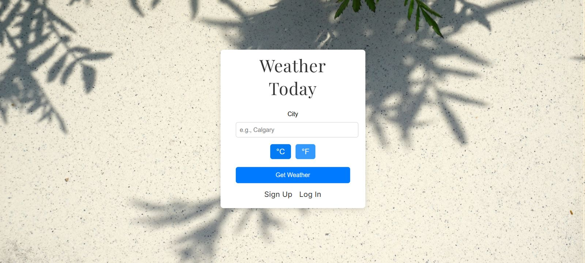
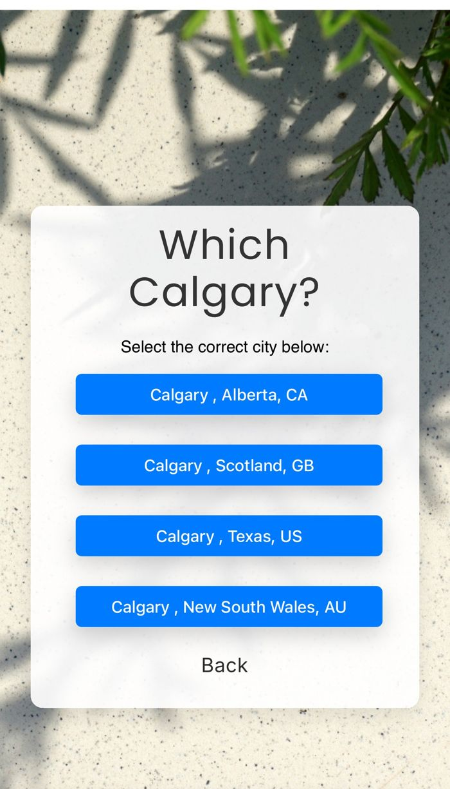
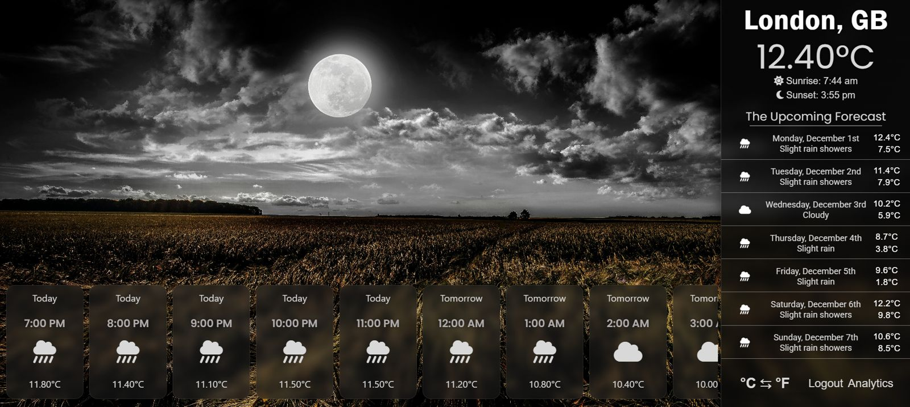
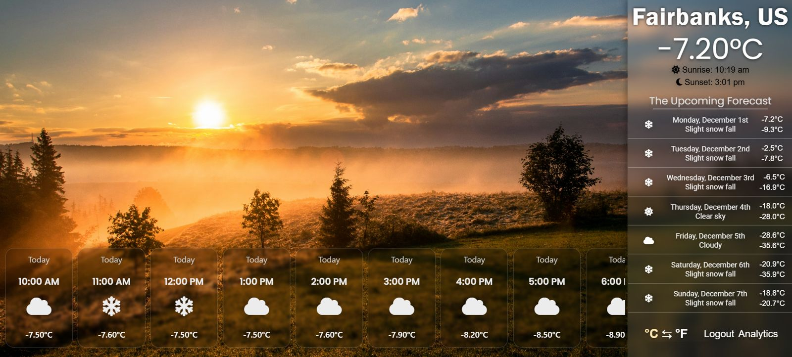
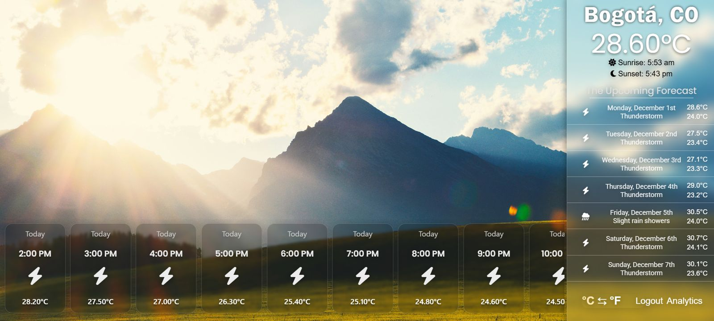
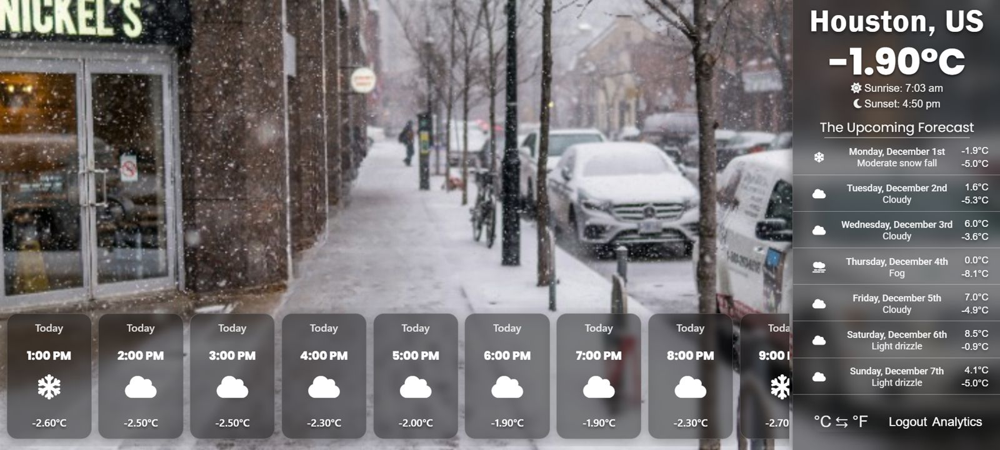
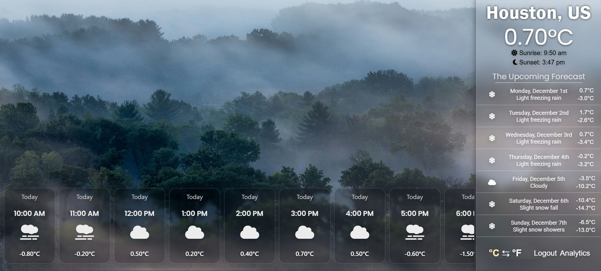
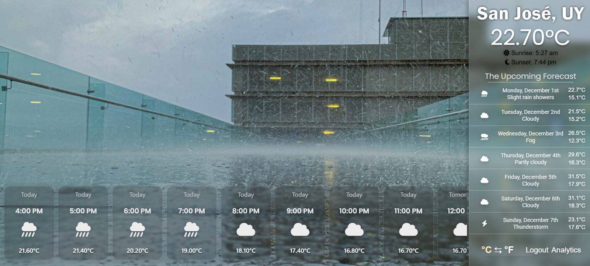
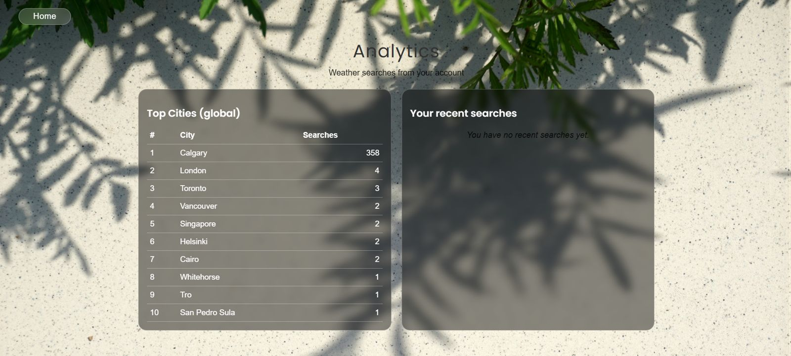
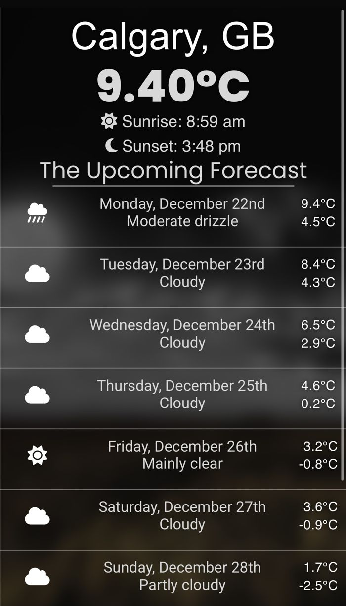

PROJECT STORY
Weather Analytics App
A live weather app I built to go from "I know Flask" to "here's what I built with Flask."
- Python
- Flask
- SQLAlchemy
- SQLite
- Jinja
- OpenWeather API
- Open-Meteo API
- Render
Free hosting, so the first load can take about 30 seconds to wake up.

01 · WHY I BUILT IT
Closing the gap between learning and showing
When I started this, I didn't know how to use Flask or any of the tools that came with it. I wanted to learn them, but I also wanted something to show for it. There's a big gap between saying "I know Flask" and saying "here's what I built with Flask," and this project was how I closed it.
I picked weather because I wanted something useful. Not a static page, but something live that changes with what's happening in the world right now, and something I could call my own.
02 · FEATURE
Search any city, even with a typo
Here's the problem: if you type "Calgray" into OpenWeather's city search, you get back nothing. Real people make typos, so I built my own matching on top of it.
- Try the exact search first. If OpenWeather finds the city, done.
- If not, search wider. The app tries again with the longest word, the first word, and the first three letters of what you typed.
- Remove duplicates and anything missing coordinates.
- Score every result by how similar its spelling is to what you typed, and throw out anything under 55% similar.
- Skip regions that aren't cities, like a "county" or "province" with the same name.
- If there's more than one good match, ask. There's more than one Calgary in the world, so you pick the right one.

The scoring step, from my code (simplified)
target = normalize(what_user_typed)
for city in candidates:
similarity = SequenceMatcher(None, target, normalize(city.name)).ratio()
scored.append((similarity, city))
scored.sort(reverse=True)
if best_similarity < 0.55: # nothing close enough
return []
# keep every city within 0.15 of the best match
return [c for s, c in scored if s >= best_similarity - 0.15]03 · FEATURE
Weather that looks like where you're searching
The background changes to match the city you searched: not just its weather, but whether it's day, night, or sunset there. If it's noon in Calgary and you search London, you see London's night sky.
This was the part where I learned how much of programming is converting data from one form to another:
- Coordinates → time zone. I take the city's latitude and longitude and look up its time zone (TimezoneFinder).
- Time zone → local time. Then I get the current time in that city (pytz).
- Local time vs. sunrise and sunset. Before sunrise or after sunset, it's night. Right around sunrise or sunset, it gets the sunset background. In places with no sunrise at all (polar night), it's always night.
- Then the weather itself. Storms, rain, snow and fog come first, then cold (under 10°C, or under 50°F; getting that check right for Fahrenheit was one of my bug fixes), then cloudy, clear or sunny.
- Text that stays readable. I grouped backgrounds by how light or dark they are, so the text and accent colours switch to stay readable on each one.






04 · FEATURE
Accounts, saved searches and analytics
You can sign up and log in (passwords are hashed, never stored as plain text), and every search you make is saved to a database. The analytics page then shows:
- The top 10 most-searched cities across every user
- Your last 15 searches, with country and time
This was the hardest part for me. I had to learn SQLAlchemy to write these queries. Learning it wasn't the hard part; applying it was. I'd worked with data sets before, but never data that keeps changing every time someone searches, while also fitting it into a page that has to look clean.

The "top 10 cities" query, from my code
top_cities = db.execute(
select(SearchEvent.city, func.count(SearchEvent.id))
.group_by(SearchEvent.city)
.order_by(func.count(SearchEvent.id).desc())
.limit(10)
).all()05 · BEHIND THE SCENES
When it worked on my laptop but not online
Something always broke. The one that taught me the most: the app ran fine on my laptop but failed when I deployed it to Render. My requirements file listed packages without version numbers, so the server installed different versions than I had.
I fixed it by locking every package to an exact version and pinning the Python version. Since then I treat "it works on my machine" as the start of testing, not the end.
Later I also rewrote a big part of the CSS so the app works properly on phones, in both portrait and landscape.

06 · WHAT I LEARNED
Connecting tools is the real skill
The biggest thing I learned is how important data conversion is: between data types, between formats, between API calls. Putting separate tools together and making them talk to each other was the hardest part, and it's the skill I'll use in everything I build from here.
07 · WHAT'S NEXT
From showing the weather to predicting it
Next, I want to add a model that predicts a city's weather from about 20 years of its past weather data. That's the bridge between this project and where I'm headed: building AI.
Try it yourself
Search your own city, or try a typo, and see what happens.